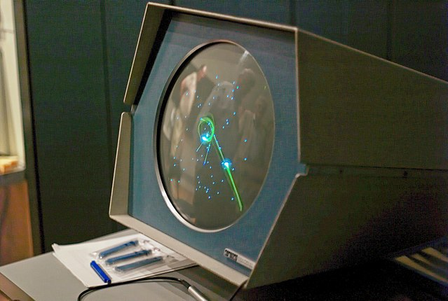
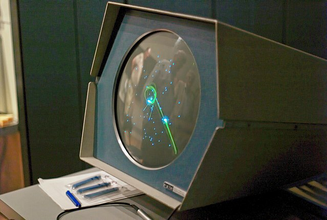

| Pág. Principal |
Década de 1950 |
Década de 1970 |
Únetenos |
|  Tennis for Two de 1958Un PDP-1 ejecutando Spacewar! Tennis for Two de 1958Un PDP-1 ejecutando Spacewar! Prototipo de la Brown Box Prototipo de la Brown Box |
Tennis for TwoA pesar de todos los avances, en 1958 el concepto de videojuegos aún resultaba elusivo. El Nimrod de Bennett era lo más parecido a un videojuego que se había visto fuera del ambiente de los talleres de ingeniería y de los laboratorios de las universidades. Sin embargo, William Higinbotham un ingeniero norteamericano que había participado en el Proyecto Manhattan, presentó un proyecto que cautivó a todos los visitantes de su laboratorio: un juego de tenis que había construido con la ayuda del ingeniero Robert Dvorak usando la pantalla de un osciloscopio y circuitería de transistores. El juego, que recreaba una partida de tenis presentando una visión lateral de la pista con una red en el medio y líneas que representaban las raquetas de los jugadores, se manejaba con sendos controladores que se habían construido a tal efecto. El aparato tuvo un enorme éxito entre las personas que visitaron el laboratorio de Higinbotham en la Brookhaven National Library, pero en 1959 fue desmantelado para usar sus piezas en otros proyectos. Higinbotham continuó con sus actividades (que incluían la investigación básica y el activismo contra la proliferación nuclear) hasta su muerte, y es considerado por muchos como uno de los padres de los videojuegos modernos.
Década de 1960La década de 1960 había sido una época de falsos comienzos para los videojuegos. Casi todos los que habían explorado la idea la habían abandonado inmediatamente convencidos de que era una enorme pérdida de tiempo. El ajedrez por computadora era un campo de investigación fructífero, pero permanecía dentro del ámbito académico, lejos del campo del entretenimiento. Sin embargo la idea de que los ordenadores no podían servir para fines lúdicos tocaba a su fin.
Spacewar!En el Massachusetts Institute of Technology existía un club de estudiantes que compartían su pasión de construir modelos de ferrocarriles a escala, el Tech Model Railroad Club. Muchos de los miembros del club compartían asimismo su pasión por los ordenadores y por las novelas de ciencia ficción de E.E. "Doc" Smith, y cuando el primer PDP-1 llegó al MIT, tres de los miembros del club se reunieron para decidir qué harían con él. Wayne Witaenem, Martin Graetz y Steve Russell decidieron que harían un juego, y bajo el liderazgo de este último desarrollaron Spacewar!, un duelo espacial para dos jugadores que vio la luz en 1962. El juego ocupaba 9k de memoria y causó sensación entre los miembros del MIT; numerosas copias del mismo fueron distribuidas a través de ARPAnet y otros medios para demostrar las capacidades del nuevo PDP-1, que acabaría incluyéndolo. No obstante, a pesar de su éxito, los jóvenes programadores no patentaron su trabajo y tampoco se plantearon su comercialización, pues requería de una plataforma hardware que costaba 120,000 dólares. Con todo, el juego acabó resultando una de las ideas más copiadas en la historia de los videojuegos, y de él se escribieron numerosas versiones posteriormente, como por ejemplo las incluidas de serie en las famosas consolas domésticas de Atari y Magnavox.
La «Brown Box» de Ralph BaerEn 1966 Ralph Baer reconsideró una idea que había abandonado unos años antes: un dispositivo que, conectado a un simple televisor, permitiese jugar al espectador con su aparato. Aprovechándose de su situación en la empresa, Baer comenzó a diseñar su aparato en secreto en los laboratorios de la misma por miedo a que su idea pudiese ser considerada como poco seria por sus superiores. Junto a Bill Harrison y Bill Rusch siguieron trabajando en el proyecto hasta que en marzo de 1967 finalizaron un primer prototipo que incorporaba ya una serie de juegos, entre los que se encontraban el ping-pong y un juego para dos jugadores en el que ambos debían acorralar al contrario. Baer y sus colaboradores también diseñaron un rifle que, conectado al dispositivo, permitía disparar a una serie de objetivos, y con el prototipo y varios juegos terminados decidió presentar su máquina a Herbert Campman, director de investigación y desarrollo de Sanders Associates. Interesado por la propuesta Campman ofreció 2,000 dólares y cinco meses a Baer para que este completara su proyecto, una cantidad insuficiente pero que «oficializaba» el trabajo de Baer.
| |